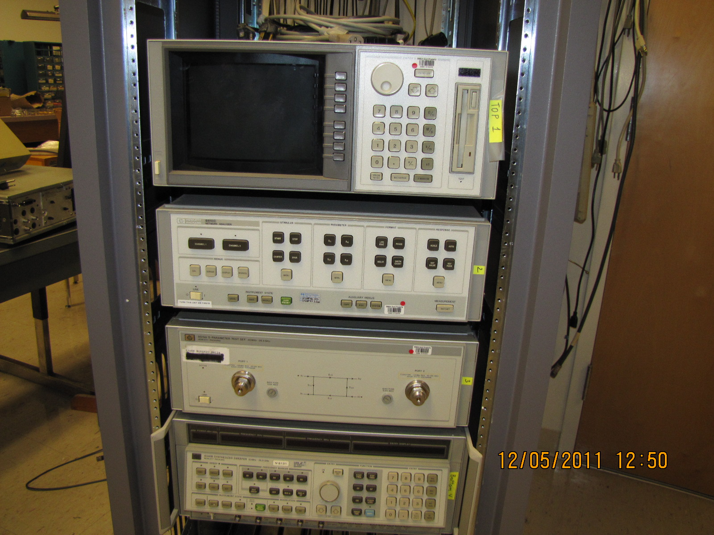

Figure 3: Points of constant magnitude of the reflection coefficient. =0.5, =1
Smith Chart is a handy tool that we use to visualize impedances and reflection coefficients. Lumped element and transmission line impedance matching would be challenging to understand without Smith Charts. Simulation software such as ADS and measurement equipment, such as Network Analyzers, use Smith Chart to represent simulated or measured data. Smith Chart first looks like Black Magic, but it is a straightforward and useful tool that will help us better understand impedance/admittance transformations and transmission lines.
An example of a Smith Chart is given in Figure fig:SC1
In essence, Smith Chart is a unit circle centered at the origin with a radius of 1. Smith Chart is used to represent the reflection coefficient graphically in polar coordinates. The reflection coefficient’s real and imaginary axis (the Cartesian coordinates) is not shown on the actual Smith Chart. However, the center of the Smith Chart is where the origin of the coordinate system would be. We usually represent the reflection coefficient in polar coordinates, with a magnitude and an angle. Magnitude is the distance between the point and the origin, and the angle is measured from the x-axis. An example location of several reflection coefficients is given in Figure scex. If you do not see why the points are positioned as shown, review the polar representation of complex numbers.
Figure scswr1, scswr circle and line represent all points on the Smith Chart that have constant magnitude or angle of the reflection coefficient. It is challenging to measure impedances directly at high frequencies, as it is difficult to measure (or sometimes even define) voltage and current. To measure impedances, engineers use Network Analyzer shown in Figure hp8510.

The simulation below shows only positive angles. In practice, if the point is below the x-axis, we use negative angles to describe the angle of the reflection coefficient. For example, if the point is at the negative y-axis, we would say that the reflection coefficient’s angle is .